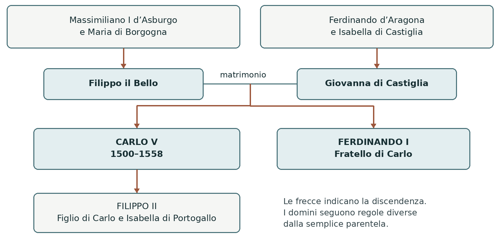
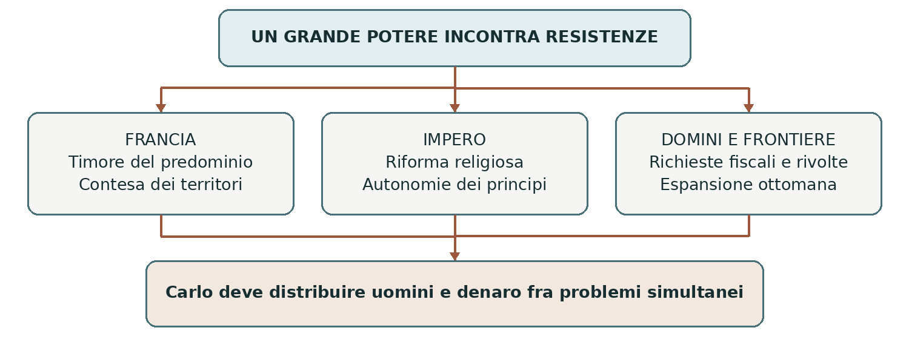
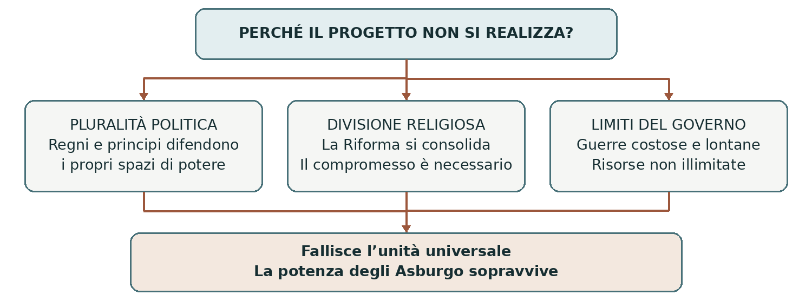

L’EUROPA NEL CINQUECENTO
Carlo V
Le eredità dinastiche e i limiti del progetto imperiale
Carlo V d’Asburgo, nato nel 1500 e morto nel 1558, riunì sotto di sé corone e territori europei e americani. La sua vicenda permette di capire perché una grande estensione territoriale non garantisca un potere senza limiti. Le guerre con la Francia, la Riforma protestante e il confronto con gli Ottomani impedirono di realizzare il suo ideale di unità cristiana, mentre la potenza degli Asburgo rimase centrale in Europa.
0 Domanda generatrice
Perché Carlo V, pur disponendo di tanti regni e risorse, non riuscì a costruire un ordine cristiano unitario sotto la guida imperiale? Per rispondere dobbiamo distinguere ciò che ereditò, ciò che ottenne per elezione e ciò che riuscì effettivamente a governare.
In sintesi Il problema non è soltanto quanto fosse vasto il suo dominio, ma quali poteri e interessi dovessero convivere al suo interno e ai suoi confini.
1 Il mondo precedente
Fra Quattrocento e Cinquecento i matrimoni fra dinastie potevano collegare territori molto lontani. Alla morte di un sovrano, un erede riceveva diritti su più regni, ciascuno con proprie leggi, assemblee e imposte. L’unione delle corone di Castiglia e Aragona, legata al matrimonio di Isabella e Ferdinando, non aveva cancellato le differenze fra i due ordinamenti.
Il Sacro Romano Impero comprendeva principati, città e signorie. L’imperatore veniva scelto dai principi elettori e doveva confrontarsi con la Dieta, l’assemblea degli stati imperiali. Il titolo dava prestigio e autorità, ma non rendeva tutti i territori imperiali proprietà personale del sovrano.
La Francia dei Valois era una monarchia rivale. Dal 1494 le guerre d’Italia avevano trasformato la penisola in un’area contesa fra potenze europee e Stati italiani. Intanto gli Ottomani si espandevano nei Balcani e nel Mediterraneo; oltre l’Atlantico, la conquista spagnola stava aprendo un nuovo e violento sistema di dominio coloniale.
In sintesi Carlo entrò in un mondo di poteri plurali, rivalità già aperte ed espansione oltremare. La sua eredità concentrò questi problemi nella persona di un solo sovrano.
Le eredità e la dignità imperiale
Carlo nacque a Gand, nei Paesi Bassi. Suo padre era Filippo il Bello; sua madre Giovanna di Castiglia, nota come Giovanna la Pazza. Il soprannome appartiene alla tradizione storica: non basta da solo a spiegare la sua esclusione dall’esercizio del potere. Carlo crebbe nell’ambiente della corte borgognona, affidato anche alla zia Margherita d’Austria.

Passaggio | Che cosa ottiene Carlo | Distinzione essenziale |
|---|---|---|
1506 e 1515 | Eredità borgognona alla morte del padre; governo personale dal 1515. | Paesi Bassi e Franca Contea. Il ducato di Borgogna resta in mano francese. |
1516 | Corone di Castiglia e Aragona, con i rispettivi domini. | Regna insieme alla madre, esclusa dal governo effettivo. È Carlo I nei regni spagnoli. |
1519 | Terre ereditarie austriache e, separatamente, elezione imperiale. | Le terre si ereditano; la dignità imperiale richiede il voto degli elettori. |
1521–1522 e 1530 | Affida i domini austriaci al fratello Ferdinando; nel 1530 è incoronato dal papa. | L’incoronazione di Bologna non coincide con l’elezione del 1519. |
Da ricordare. Napoli, Sicilia e Sardegna rientravano nell’eredità aragonese; i domini americani erano legati alla Castiglia. Il Portogallo e la Corsica non facevano parte di questa eredità. “Paesi Bassi” indica un insieme storico di territori più ampio delle sole Fiandre e diverso dagli Stati attuali.
2 Le fratture
La concentrazione delle corone
Nel 1519, morto Massimiliano I, Carlo si candidò alla dignità imperiale. Fra i concorrenti figurava Francesco I di Francia. L’elezione fu anche una competizione diplomatica e finanziaria: il sostegno di banchieri come i Fugger aiutò Carlo a procurarsi le risorse necessarie. Il prestigio della famiglia, da solo, non assicurava la successione.
La concentrazione di domini asburgici a nord, a est e a sud della Francia alimentò il timore francese di un accerchiamento. Il ducato di Milano aveva una posizione strategica per le comunicazioni e per il controllo dell’Italia settentrionale. La rivalità non nacque soltanto dall’ambizione personale di due sovrani: riguardava la distribuzione del potere in Europa.
La Riforma mette in discussione la cristianità latina
Dal 1517 la predicazione di Martin Lutero aprì una controversia religiosa sempre più profonda. La diffusione della Riforma investì la vita delle comunità, l’autorità del papa e il governo delle Chiese territoriali. La rottura maturò nel tempo: il 1517 ne indica l’avvio convenzionale, non la nascita immediata di due blocchi già organizzati.
Per Carlo, che attribuiva all’impero una missione cristiana, la divisione religiosa era anche un problema politico. Per molti principi la difesa del luteranesimo si intrecciava con la tutela della propria autonomia. Le convinzioni religiose erano reali, ma agivano insieme a interessi territoriali e dinastici.
La resistenza dentro i domini
Anche nei regni spagnoli l’autorità di Carlo dovette consolidarsi. In Castiglia la rivolta dei comuneros, iniziata nel 1520, espresse il malcontento di città e gruppi sociali verso richieste fiscali e indirizzi del governo. La sconfitta dei ribelli a Villalar nel 1521 rafforzò la monarchia, mostrando però che ereditare una corona non significava ottenere automaticamente obbedienza.

In sintesi Carlo doveva fronteggiare nello stesso tempo rivali esterni, divisioni religiose e resistenze interne. Ogni scelta su un fronte riduceva le risorse disponibili sugli altri.
3 Attori gruppi e conflitti
Progetti diversi dentro la stessa Europa
Carlo presentava la propria autorità come uno strumento per difendere la fede cattolica e favorire la concordia fra i cristiani. Questo ideale, spesso definito monarchia universale, si intrecciava con gli interessi della dinastia. Non esisteva però un diritto effettivo dell’imperatore a comandare tutti i re europei: Francesco I non era suo vassallo in quanto re di Francia.
Protagonisti | Interessi e obiettivi | Rapporto con Carlo |
|---|---|---|
Carlo V e la dinastia | Difendere i domini e accrescere il prestigio imperiale; preservare l’unità cattolica. | Dispongono di grandi risorse, distribuite però fra territori con regole differenti. |
Francesco I ed Enrico II | Limitare il predominio asburgico; mantenere influenza in Italia e alle frontiere orientali. | Rivali cattolici, capaci di collaborare con potenze di altra religione. |
Papi e Stati italiani | Difendere autorità religiosa, territori e margini di autonomia. | Alternano cooperazione e opposizione secondo il momento politico. |
Principi e città imperiali | Tutelare autonomie, confessione religiosa e controllo dei beni ecclesiastici. | I principi luterani non agiscono sempre uniti; anche i cattolici difendono i propri diritti. |
Solimano I e gli Ottomani | Ampliare influenza e domini nei Balcani e nel Mediterraneo. | Competono con gli Asburgo e collaborano con la Francia contro il rivale comune. |
Banchieri soldati e sudditi | Finanziare le guerre, ricevere paghe, difendere beni e condizioni di vita. | Prestiti, imposte, requisizioni e saccheggi collegano la politica alla vita quotidiana. |
Governare attraverso molte istituzioni
L’insieme dei domini era una monarchia composita: il sovrano era comune, ma non esistevano un’unica legge e un’unica amministrazione per tutti. Consigli, reggenti, governatori e viceré permettevano di coordinare decisioni e territori. Le assemblee locali e i privilegi imponevano negoziazioni, soprattutto quando si chiedevano nuove risorse.
Il governo coinvolgeva anche donne della dinastia: Margherita d’Austria e poi Maria d’Ungheria amministrarono i Paesi Bassi. Carlo viaggiava spesso, ma non poteva essere presente su ogni fronte. La distanza e la lentezza delle comunicazioni rendevano indispensabili deleghe e accordi.
In sintesi La potenza di Carlo dipendeva da collaboratori e risorse che dovevano essere continuamente mobilitati. Questa struttura spiega le difficoltà delle guerre e la variabilità delle alleanze.
4 Il processo storico
Le guerre con la Francia dal 1521 al 1529
La lotta con la Francia attraversò più riprese. La divisione in sei fasi aiuta a orientarsi, purché si ricordi che i conflitti religiosi e mediterranei continuavano contemporaneamente. Gli Stati italiani partecipavano con proprie scelte: non furono soltanto un territorio passivo di conquista.
Prima fase dal 1521 al 1526
Il primo conflitto ebbe nell’Italia settentrionale un teatro decisivo. Carlo poté contare, in questa fase, sul sostegno di Leone X e di Enrico VIII d’Inghilterra; Venezia inizialmente affiancò la Francia, ma le alleanze cambiarono durante la guerra. A Milano fu restaurato Francesco II Sforza, appoggiato dall’imperatore.
Il 24 febbraio 1525, nella battaglia di Pavia, l’esercito francese fu sconfitto e Francesco I venne catturato. Condotto in Spagna, nel 1526 firmò il trattato di Madrid: rinunciava alle pretese italiane e prometteva di cedere il ducato di Borgogna. Una volta libero, però, rifiutò di applicare gli impegni. La cessione della Borgogna non divenne un trasferimento effettivo.
Seconda fase dal 1526 al 1529
La vittoria imperiale allarmò anche precedenti alleati. Nel 1526 la Lega di Cognac riunì contro Carlo la Francia, Clemente VII, Venezia, Firenze e il ducato di Milano. Il re d’Inghilterra favorì diplomaticamente l’intesa, senza assumere lo stesso ruolo militare dei principali partecipanti.
Il 6 maggio 1527 le truppe imperiali entrarono a Roma: cominciò il sacco di Roma. Soldati di diversa provenienza, molti senza paga, compirono saccheggi e violenze; il papa si rifugiò in Castel Sant’Angelo. Carlo non guidava personalmente l’assalto. La devastazione mostrò la distanza fra la proclamata difesa della cristianità e la realtà di una guerra combattuta anche contro il pontefice.
Nel 1528 l’offensiva francese contro Napoli fallì, colpita anche dalle malattie e dal passaggio di Andrea Doria al servizio di Carlo. Nel 1529 l’imperatore si accordò con il papa a Barcellona e con la Francia a Cambrai. Francesco conservò la Borgogna e rinunciò nuovamente alle pretese italiane. Luisa di Savoia e Margherita d’Austria condussero il negoziato di Cambrai, detto pace delle Due Dame.
Nel 1530, a Bologna, Clemente VII incoronò Carlo imperatore. La collaborazione riprese e i Medici tornarono al potere a Firenze dopo la sconfitta della repubblica. Il sacco non aveva cancellato per sempre i rapporti fra papato e impero.
In sintesi Pavia e Cambrai rafforzarono Carlo in Italia, ma non eliminarono la Francia come rivale. La vittoria militare produceva nuove coalizioni contrarie al predominio asburgico.
Le nuove guerre dal 1535 al 1544
Terza fase dalla crisi del 1535 alla tregua del 1538
Nel 1535 morì senza eredi Francesco II Sforza. Il ducato di Milano, feudo imperiale, passò sotto il controllo di Carlo. Francesco I tornò a rivendicarlo; nel 1536 le truppe francesi occuparono la Savoia e gran parte del Piemonte. La morte del duca fu l’occasione immediata della ripresa, dentro una rivalità rimasta aperta.
La Francia rafforzò la collaborazione con il sultano Solimano I il Magnifico. L’intesa aveva uno scopo politico: impegnare gli Asburgo su più fronti. Le differenze religiose non impedivano accordi fra sovrani che individuavano un avversario comune. Questo non significa che la religione fosse irrilevante, ma che non determinava da sola la politica estera.
La campagna non produsse una vittoria risolutiva. La tregua di Nizza del 1538, favorita da papa Paolo III, lasciò il Milanese sotto controllo asburgico e ampie parti dei territori sabaudi occupate dai francesi. Era una sospensione, non una soluzione definitiva. Nel 1540 Carlo investì del ducato di Milano il figlio Filippo, preparando il suo legame con il futuro ramo spagnolo.
Quarta fase dal 1542 al 1544
La guerra riprese nel 1542. Questa volta Enrico VIII combatté a fianco di Carlo, mentre la Francia collaborava con gli Ottomani. Si combatté in Italia, lungo le frontiere francesi e nei Paesi Bassi, oltre che nel Mediterraneo: ridurre il conflitto al solo teatro marittimo nasconde il peso delle campagne terrestri.
Le operazioni non consentirono di imporre tutte le richieste di uno dei contendenti. Nel 1544 la pace di Crépy chiuse lo scontro fra Carlo e Francesco I, lasciando irrisolto il contrasto di fondo. La guerra fra Francia e Inghilterra proseguì ancora: anche qui un accordo fra due potenze non coincideva con la fine di ogni ostilità.
Snodo | Risultato immediato | Questione ancora aperta |
|---|---|---|
Milano 1535 | Finisce la dinastia degli Sforza nel ducato. | La Francia ne contesta il controllo asburgico. |
Nizza 1538 | Tregua fra Carlo e Francesco I. | Restano occupazioni e rivendicazioni territoriali. |
Crépy 1544 | Pace fra Francia e imperatore. | La rivalità europea sopravvive all’accordo. |
In sintesi I compromessi permettevano di fermare una campagna e rivolgere risorse altrove. Non cancellavano gli interessi che avevano provocato la guerra.
Le ultime fasi e la pace del 1559
Quinta fase dalla ripresa del 1551 alla tregua del 1556
Morto Francesco I nel 1547, il figlio Enrico II continuò la politica contro gli Asburgo. La guerra riprese nel 1551; il 1552 fu lo snodo decisivo, quando il re francese sostenne principi tedeschi ribelli a Carlo e occupò Metz, Toul e Verdun, i Tre Vescovati. Non conquistò l’intera Lorena.
Carlo non riuscì a recuperare Metz. Nello stesso periodo la rivolta dei principi tedeschi lo costrinse a rivedere la propria politica religiosa. In Corsica, una spedizione franco-ottomana nel 1553 sottrasse temporaneamente parte dell’isola al controllo genovese; non fu un’acquisizione francese definitiva. La tregua di Vaucelles del 1556 sospese il conflitto, mentre Carlo stava abbandonando le proprie cariche.
Sesta fase dalla rottura del 1556 alla pace del 1559
Dopo le abdicazioni, il principale avversario di Enrico II fu Filippo II, figlio di Carlo e re di Spagna. Le ostilità ripresero già nel 1556; le campagne decisive si svolsero dal 1557. Paolo IV appoggiò la Francia, mentre l’Inghilterra di Maria Tudor, moglie di Filippo, entrò in guerra a fianco della Spagna.
Nel 1557 l’esercito di Filippo, comandato da Emanuele Filiberto di Savoia, vinse a San Quintino. I costi della guerra pesavano su entrambi gli schieramenti. Gli accordi di Cateau-Cambrésis dell’aprile 1559 conclusero la lunga contesa per l’Italia e confermarono la supremazia spagnola nella penisola. Carlo, morto nel 1558, non ne fu il firmatario.
Le sei fasi | Passaggio essenziale | Pace o tregua |
|---|---|---|
1521–1526 | Pavia e prigionia di Francesco I. | Madrid 1526 |
1526–1529 | Lega di Cognac e sacco di Roma. | Cambrai 1529 |
1535–1538 | Crisi di Milano; guerra dal 1536. | Nizza 1538 |
1542–1544 | Guerra su più fronti. | Crépy 1544 |
1551–1556 | Enrico II e la crisi del 1552. | Vaucelles 1556 |
1556–1559 | Filippo II e San Quintino nel 1557. | Cateau-Cambrésis 1559 |
Come leggere la periodizzazione. Il 1535 indica la crisi che precede la guerra; il 1552 e il 1557 sono anni decisivi dentro conflitti già iniziati. Le fasi servono a comprendere le riprese e non rappresentano sei guerre isolate dal resto d’Europa.
In sintesi La Francia conservò forza e autonomia, ma la Spagna consolidò la propria posizione italiana. Per spiegare il ritiro di Carlo occorre ora considerare anche gli altri fronti.
Il confronto con gli Ottomani
Due potenze e due fronti
L’Impero ottomano, guidato da Solimano I dal 1520, perseguiva una propria politica di espansione. Per gli Asburgo rappresentava un concorrente territoriale e strategico; Carlo presentava lo scontro anche come difesa della cristianità. Il linguaggio degli “infedeli” esprimeva il punto di vista confessionale dei cristiani del tempo, non una categoria neutrale per lo storico.
Il confronto si sviluppò lungo il Danubio e nel Mediterraneo. Sul fronte centroeuropeo agiva soprattutto Ferdinando, fratello di Carlo. Dopo la morte di Luigi II nella battaglia di Mohács del 1526, Ferdinando acquisì la corona di Boemia e rivendicò quella ungherese, incontrando la resistenza di altri pretendenti e degli Ottomani. Non governò stabilmente tutta l’Ungheria.
Nel 1529 l’esercito di Solimano assediò Vienna, ma non riuscì a conquistarla. L’espansione ottomana proseguì in parte dell’Ungheria; la sopravvivenza dei domini asburgici mostra però che non vi fu una vittoria ottomana completa su tutta l’Europa orientale.
Il Mediterraneo fra guerra e commerci
Sul mare erano in gioco porti, rotte, basi navali e sicurezza delle coste. Le flotte ottomane e i corsari nordafricani collegati al sultano minacciavano navigazione e insediamenti costieri. Razzie, catture e riduzione in schiavitù colpivano le popolazioni; la guerra marittima coinvolgeva anche attività corsare e schiavistiche cristiane.
Carlo ottenne un successo con la spedizione di Tunisi del 1535, ma nel 1541 fallì davanti ad Algeri. La vittoria navale ottomana di Prevesa del 1538 aveva già rafforzato la posizione del sultano. Il Mediterraneo restò uno spazio conteso, con rapporti di forza mutevoli, non un mare interamente controllato da un solo sovrano.
Luogo e data | Evento | Conseguenza |
|---|---|---|
Mohács 1526 | Vittoria ottomana e morte di Luigi II. | Crisi della successione boema e ungherese. |
Vienna 1529 | L’assedio ottomano fallisce. | La capitale asburgica resiste. |
Tunisi 1535 | Successo della spedizione di Carlo. | Prestigio imperiale e vantaggio nel Nord Africa. |
Prevesa 1538 e Algeri 1541 | Successo navale ottomano e fallimento della spedizione imperiale. | Restano forti limiti all’azione mediterranea di Carlo. |
In sintesi Gli Asburgo non eliminarono la potenza ottomana, ma neppure persero ogni capacità di resistenza. L’accordo fra Francia e sultano rese più difficile concentrare le forze su un solo fronte.
La Riforma e la pace di Augusta
Dalla condanna di Lutero alla guerra
Alla Dieta di Worms del 1521, Lutero rifiutò di ritrattare le proprie idee. Carlo lo mise al bando con un editto, ma la protezione di principi e la diffusione della predicazione impedirono di fermare la Riforma. Nel 1531 alcuni principi e città protestanti costituirono la Lega di Smalcalda, un’alleanza difensiva.
Carlo cercò anche una soluzione attraverso il dialogo e un concilio, cioè un’assemblea dei vescovi. Il concilio si aprì a Trento nel 1545, ma non ricompose la frattura. L’imperatore e il papato condividevano la difesa del cattolicesimo, pur divergendo sui tempi, sugli strumenti e sul controllo delle decisioni.
Nella guerra del 1546–1547 Carlo sconfisse la Lega di Smalcalda a Mühlberg nel 1547. Ebbe anche il sostegno di Maurizio di Sassonia, principe luterano: l’appartenenza religiosa non cancellava le rivalità fra dinastie. Il tentativo di imporre nel 1548 una sistemazione provvisoria, l’Interim di Augusta, incontrò forti opposizioni.
Nel 1552 Maurizio si rivolse contro Carlo, con l’appoggio francese. Il successo dei ribelli e gli accordi di Passavia aprirono la strada a una soluzione negoziata. La vittoria di Mühlberg aveva dimostrato la forza militare dell’imperatore, ma non gli aveva assicurato un consenso durevole.
Il compromesso religioso del 1555
La pace di Augusta del 1555, negoziata soprattutto da Ferdinando, riconobbe nell’Impero cattolici e luterani. Ai governanti territoriali fu riconosciuto, con eccezioni, il diritto di stabilire la confessione del territorio. Il principio sarà riassunto nella formula cuius regio, eius religio, “di chi è il governo, di lui sia la religione”.
Questione | Soluzione e limite |
|---|---|
Confessioni riconosciute | Cattolicesimo e luteranesimo. Calvinisti e altri gruppi restano esclusi. |
Sudditi dissenzienti | È previsto il diritto di emigrare, vendendo i beni e rispettando gli obblighi dovuti. Non è libertà religiosa individuale generale. |
Principati ecclesiastici | Il prelato che lascia il cattolicesimo deve rinunciare alla carica e ai benefici: è la riserva ecclesiastica. |
Geografia religiosa | Si consolida un mosaico territoriale. Non nasce una divisione uniforme fra un nord protestante e un sud cattolico. |
La questione dei vescovati riguardava la natura ecclesiastica di cariche, beni e poteri: non si risolveva semplicemente chiedendo se i figli di un vescovo potessero ereditarli. Anche i luterani erano cristiani; la divisione era interna al cristianesimo occidentale.
In sintesi Augusta rese possibile la convivenza politica senza ristabilire l’unità di fede. Fu un limite decisivo al progetto di Carlo, ma consentì all’Impero di continuare a esistere.
5 Le fonti in dialogo
Un sovrano racconta il proprio governo
Fonte A. Il discorso di abdicazione del 25 ottobre 1555. A Bruxelles Carlo si rivolse ai rappresentanti dei Paesi Bassi per cedere quei domini a Filippo. Il testo è disponibile in German History in Documents and Images, nell’edizione documentaria curata da Alfred Kohler. Qui ne presentiamo una parafrasi didattica, non una citazione letterale.
Carlo sostiene di aver cercato la dignità imperiale per favorire la pace fra i cristiani e difendere la fede. Attribuisce gli ostacoli alle divisioni religiose e ai rivali; richiama i viaggi, le guerre e la salute compromessa. Chiede fedeltà al successore e riconosce anche propri errori.
Il destinatario è l’élite politica dei Paesi Bassi; lo scopo è giustificare il ritiro e legittimare la successione. È quindi un’autorappresentazione: permette di studiare come Carlo vuole essere ricordato, senza dimostrare che tutte le sue guerre fossero inevitabili o disinteressate.
Un accordo regola una divisione reale
Fonte B. La pace religiosa di Augusta del 25 settembre 1555. L’atto, promulgato da Ferdinando nel quadro della Dieta, si rivolge agli stati e ai sudditi dell’Impero. È una fonte normativa: prescrive comportamenti e diritti, non descrive automaticamente come essi furono applicati.
Parafrasi dei paragrafi 15–18 e 24. Gli stati cattolici e quelli aderenti alla Confessione di Augusta devono rispettarsi; le altre confessioni sono escluse dall’accordo. Un titolare ecclesiastico che abbandona il cattolicesimo deve lasciare la carica e i benefici. I sudditi delle due confessioni riconosciute possono emigrare alle condizioni previste.
Il confronto mostra la distanza fra l’ideale di unità richiamato da Carlo e le regole di convivenza adottate nell’Impero. L’accordo prova che la divisione doveva essere regolata; non prova che le differenze religiose fossero ormai accettate da tutti senza ostilità.
Domanda alla fonte | Discorso di Carlo | Pace di Augusta |
|---|---|---|
Chi parla e a chi | Il sovrano ai rappresentanti dei Paesi Bassi. | Ferdinando nel quadro dell’accordo fra gli stati imperiali. |
Che cosa vuole ottenere | Fedeltà al successore e riconoscimento della propria opera. | Una pace politica fra cattolici e luterani. |
Quale limite presenta | È una giustificazione pubblica del protagonista. | Le norme non equivalgono alla loro applicazione ovunque. |
Domanda di lettura. Quale differenza c’è fra affermare di aver difeso la cristianità e stabilire regole per far convivere confessioni diverse? Usa un elemento di ciascuna fonte.
In sintesi Le fonti chiariscono il passaggio dal progetto personale alla ricerca di un equilibrio praticabile. Il ritiro di Carlo va letto dentro questa trasformazione.
6 Conseguenze e nuovo assetto
Le abdicazioni e i due rami degli Asburgo
Fra 1555 e 1556 Carlo rinunciò progressivamente ai propri poteri. Pesavano la salute, la fatica del governo e le difficoltà politiche e religiose. Nel 1555 cedette i Paesi Bassi a Filippo II; nel 1556 gli trasferì le corone spagnole. Anche la rinuncia imperiale risale al 1556, ma il riconoscimento formale di Ferdinando I come imperatore da parte degli elettori si completò nel 1558.
Non si trattò di dividere in due uno Stato prima uniforme. Ferdinando governava già i territori austriaci dal 1521–1522 ed era re dei Romani dal 1531, dunque successore designato attraverso un’elezione. La dignità imperiale non passò al fratello come una semplice proprietà ereditaria.
Ramo della dinastia | Domini e ruolo principali | Precisazione |
|---|---|---|
Filippo II e ramo spagnolo | Corone spagnole, domini americani, Paesi Bassi, Franca Contea e possedimenti italiani. | Filippo non diventa imperatore del Sacro Romano Impero. |
Ferdinando I e ramo austriaco | Terre austriache, corona di Boemia e parte dell’Ungheria; dignità imperiale. | Boemia e Ungheria derivano dalla successione del 1526, non da un dono finale di Carlo. |
Carlo si ritirò in una residenza presso il monastero di Yuste, in Spagna, senza diventare monaco. Morì nel 1558. I due rami continuarono a cooperare come membri della stessa dinastia, ma seguirono anche interessi territoriali differenti.
Un dominio che attraversava gli oceani
Durante il regno di Carlo l’espansione nelle Americhe ampliò enormemente i domini della Corona di Castiglia. I territori dei regni mexica e inca non erano un’eredità già acquisita dai nonni: entrarono nei domini castigliani attraverso campagne, alleanze locali e sottomissioni durante il regno di Carlo.
Per le popolazioni indigene la conquista comportò violenze, espropriazioni, lavoro imposto e una crisi demografica aggravata dalle epidemie. Le ricchezze coloniali alimentarono la monarchia, ma non annullarono debiti e bisogni finanziari. Dal punto di vista europeo si celebrava la vastità dei domini; dal punto di vista dei conquistati essa significava perdita di autonomia e trasformazione delle condizioni di vita.
L’espressione “impero di Carlo V” ha dunque due usi: può indicare il Sacro Romano Impero, con le proprie istituzioni, oppure, in senso più ampio, l’insieme dei suoi domini. Le Americhe e i regni spagnoli non diventavano per questo province del Sacro Romano Impero.
In sintesi La separazione dei governi chiuse la concentrazione personale di Carlo. Restarono però due forti monarchie asburgiche e un esteso sistema coloniale.
La penisola italiana dopo il 1559
Il predominio spagnolo
La pace di Cateau-Cambrésis concluse le guerre d’Italia fra le grandi potenze e confermò una forte egemonia spagnola. “Egemonia” significa predominio: in alcuni territori la Spagna governava direttamente, in altri esercitava influenza attraverso alleanze, legami dinastici, finanza e pressione militare.
Territorio o Stato | Assetto essenziale | Tipo di rapporto |
|---|---|---|
Milano, Napoli, Sicilia e Sardegna | Restano ai sovrani del ramo spagnolo. | Governo diretto attraverso istituzioni e rappresentanti del re. |
Stato dei Presidi | Piazzeforti sulla costa toscana sotto la Spagna. | Controllo militare di punti strategici. |
Stati sabaudi | Emanuele Filiberto recupera Savoia e Piemonte, con limitazioni e piazzeforti ancora occupate. | Restaurazione dinastica, non restituzione immediata senza eccezioni. |
Saluzzo | Il marchesato rimane alla Francia. | Residua presenza francese in Italia. |
Firenze e Siena | Si consolida il dominio di Cosimo I de’ Medici su gran parte della Toscana. | Legame con la Spagna; Lucca conserva la propria indipendenza. |
Genova | Resta una repubblica; la Corsica torna sotto il suo controllo. | Stretti rapporti politici e finanziari con la monarchia spagnola. |
Venezia e Stato pontificio | Conservano istituzioni e territori propri. | Stati autonomi dentro un equilibrio dominato dalla Spagna. |
Perciò non è corretto affermare che gli Asburgo persero ogni influenza sull’Italia. Il risultato fu quasi opposto: il ramo spagnolo consolidò il proprio predominio, pur senza annettere l’intera penisola. Il papato mantenne autonomia politica e religiosa, continuando a confrontarsi con la potenza asburgica.
La Francia resta una grande potenza
La Francia rinunciò al progetto di prevalere nella penisola, ma conservò un ruolo decisivo in Europa. Tenne Calais, conquistata agli inglesi nel 1558, e il controllo di Metz, Toul e Verdun, la cui sovranità francese sarebbe stata riconosciuta formalmente nel 1648. La Corsica fu invece restituita a Genova.
Il nuovo assetto non cancellò i conflitti europei. La frattura religiosa continuò a incidere sulla politica degli Stati; in Francia, pochi anni dopo, esplosero le guerre di religione. Il 1559 conclude un ciclo di guerre per l’Italia, non inaugura una pace generale permanente.
In sintesi L’esito italiano e la sopravvivenza della potenza francese mostrano insieme i risultati e i limiti della politica asburgica. Questo permette un bilancio più preciso del regno di Carlo.
7 Conclusione
Il limite del progetto e la forza della dinastia
Carlo V non riuscì a realizzare un ordine cristiano unitario perché i suoi obiettivi incontravano poteri e interessi autonomi. La Francia difendeva la propria posizione; i principi imperiali tutelavano diritti e confessioni; il papato difendeva il proprio ruolo; gli Ottomani perseguivano una politica di espansione. La forza di Carlo induceva questi attori a cercare alleati e compromessi anche oltre le divisioni religiose.
La pluralità dei domini era una risorsa e insieme un problema di governo. Le guerre richiedevano denaro e uomini, mentre distanze, istituzioni locali e fronti simultanei limitavano la capacità di concentrare le forze. Anche una vittoria come Mühlberg non eliminava le ragioni politiche e religiose della resistenza.
La formula “fallimento su tutti i fronti” è quindi troppo netta. Fallì l’obiettivo di ricomporre la cristianità occidentale sotto una guida imperiale forte. Non scomparvero però i domini degli Asburgo: il ramo spagnolo uscì rafforzato in Italia e mantenne un vasto impero coloniale; quello austriaco conservò terre e dignità imperiale. Distinguere progetto, risultati e conseguenze evita di ridurre il passato a un verdetto sul successo personale di un sovrano.
Mappa concettuale

Sintesi finale
Le eredità concentrarono più corone nelle mani di Carlo.
L’elezione del 1519 gli attribuì una dignità diversa dai domini ereditari.
Francia, principi imperiali, papato e Ottomani limitarono la sua azione.
Le guerre e la divisione religiosa impedirono una soluzione universale.
Augusta riconobbe la presenza di cattolici e luterani nell’Impero.
Le abdicazioni separarono i governi dei rami spagnolo e austriaco.
L’unità desiderata fallì, mentre la potenza dinastica sopravvisse.
Coordinate essenziali
Spazi: Paesi Bassi e Franca Contea; regni spagnoli e Americhe; territori austriaci e Sacro Romano Impero; Italia; Danubio e Mediterraneo. Arco cronologico: dalla nascita di Carlo nel 1500 alla sua morte nel 1558, con il bilancio italiano del 1559. “Europa” e “domini di Carlo” non sono espressioni equivalenti.
Date e parole per orientarsi
Linea del tempo ragionata
Data | Snodo | Significato |
|---|---|---|
1506–1516 | Eredità borgognona e corone spagnole. | Si concentra un insieme di territori distinti. |
1517–1519 | Avvio della Riforma ed elezione imperiale. | Il progetto di unità incontra una frattura religiosa. |
1521 | Worms e Villalar. | Resistenza religiosa nell’Impero e rivolta in Castiglia. |
1525–1527 | Pavia, nuova coalizione e sacco di Roma. | La vittoria imperiale provoca altre opposizioni. |
1529–1530 | Vienna, Cambrai e incoronazione a Bologna. | Resistenza agli Ottomani e rafforzamento in Italia. |
1535–1544 | Tunisi e nuove guerre con la Francia. | I diversi fronti assorbono risorse contemporaneamente. |
1547–1552 | Mühlberg e rivolta dei principi. | La vittoria militare non dà stabilità religiosa. |
1555 | Pace di Augusta. | Cattolicesimo e luteranesimo convivono legalmente nell’Impero. |
1555–1558 | Abdicazioni, successione imperiale e morte. | Si consolidano due rami di governo asburgici. |
1559 | Cateau-Cambrésis. | Conferma del predominio spagnolo in Italia. |
Vocabolario essenziale
Parola | Definizione |
|---|---|
Dinastia | Famiglia che trasmette nel tempo titoli e poteri di governo. |
Monarchia composita | Insieme di regni e territori sotto lo stesso sovrano, con leggi e istituzioni differenti. |
Principe elettore | Titolare del diritto di partecipare all’elezione del sovrano dell’Impero. |
Dieta | Assemblea degli stati del Sacro Romano Impero. |
Monarchia universale | Ideale di un ordine politico cristiano imperniato sulla guida dell’imperatore. |
Confessione | Comunità religiosa definita da dottrine e pratiche condivise. |
Abdicazione | Rinuncia del sovrano alla propria carica. |
Egemonia | Predominio politico e militare, anche senza governo diretto di tutti i territori. |
Ripassare e ragionare
Saperi irrinunciabili
Carlo riunisce eredità borgognone, spagnole e austriache attraverso passaggi diversi.
La dignità imperiale è elettiva: il 1519 non è una semplice successione ereditaria.
Il Sacro Romano Impero non coincide con l’insieme dei domini di Carlo.
La monarchia composita conserva leggi e istituzioni differenti nei vari territori.
La rivalità con la Francia riguarda l’equilibrio europeo e il controllo dell’Italia.
Pavia rafforza Carlo; la Lega di Cognac reagisce al suo predominio.
Il sacco di Roma inizia il 6 maggio 1527 e non interrompe per sempre i rapporti con il papa.
La collaborazione franco-ottomana mostra che religione e alleanze non coincidono sempre.
Vienna resiste nel 1529; Tunisi e Algeri mostrano esiti diversi delle campagne di Carlo.
Mühlberg nel 1547 non risolve la questione protestante; Augusta riconosce due confessioni.
Filippo II riceve le corone spagnole; Ferdinando I diventa imperatore.
Cateau-Cambrésis conferma il predominio spagnolo in Italia dopo il ritiro di Carlo.
Il fallimento del progetto universale non equivale al crollo della dinastia.
Attività di comprensione
A Distingui i poteri. Spiega perché “re dei regni spagnoli”, “signore dei Paesi Bassi” e “imperatore” indicano rapporti diversi con i territori. Usa almeno due date.
B Ricostruisci un processo. Collega Pavia, Lega di Cognac, sacco di Roma e Cambrai. Per ogni passaggio indica chi reagisce, per quale interesse e con quale risultato.
C Leggi le fonti. Confronta i testi di pagina 10: individua autore, destinatario, scopo e limite. Spiega perché il discorso di un sovrano non è una valutazione imparziale del suo governo.
D Correggi e motiva. “Carlo ereditò il titolo imperiale”; “il re di Francia era suo vassallo”; “i luterani non erano cristiani”; “nel 1559 tutta l’Italia diventò spagnola”.
E Argomenta. In 15 righe rispondi alla domanda generatrice. Distingui il fallimento dell’unità cristiana da almeno due risultati duraturi della dinastia.
Riferimenti essenziali
Fonte di partenza: lezione e mappe del docente Carlo V.pdf. Controlli: Die Welt der Habsburger; Treccani; German History in Documents and Images, discorso di abdicazione e pace di Augusta; Patrimonio Nacional. Le fonti testuali sono presentate in parafrasi. Riferimenti completi e correzioni nella nota docente.